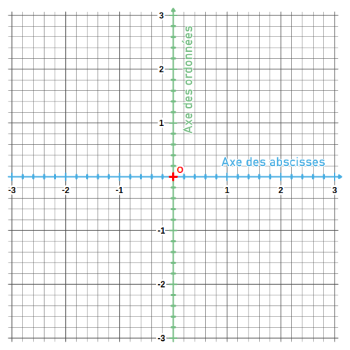
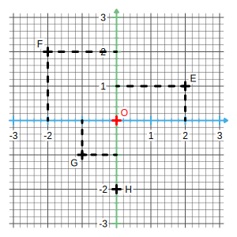

Le milliardaire Pythagorapoulos a invité ses amis à participer à un rallye.
Quelles sont les coordonnées de l'extrémité de La Pointe à Pitre ?
Un requin nage dans une baie au point (5 ; -1).
Quel est le nom de cette baie ?
Un des invités s'est caché dans un monument dont l'ordonnée est 4.
Quelle est son abscisse ?
Quel est le nom du monument ?
Ecrire les coordonnées des points suivants :
A (...... ; ......)
B (...... ; ......)
C (...... ; ......)
D (...... ; ......)
E (...... ; ......)
F (...... ; ......)
G (...... ; ......)
Repère :
Un repère orthogonal du plan est composé de deux droites graduées perpendiculaires et de même origine. Une première horizontale qui est appelée axe des abscisses.Une autre verticale qui est appelée axe des ordonnées.

Remarque :
Le point O est appelée origine du repère.
Coordonnées :
Dans un repère, la position d'un point est alors donnée par deux nombres relatifs :
Le premier, appelé abscisse se lit sur l'axe horizontal.
Le second, appelé ordonnée se lit sur l'axe vertical.
Ces deux nombres représentent les coordonnées de ce point.

Exemple :
F(-2 ; 2)
G(-1 ; -1)
H(0 ; -2)
O(0 ; 0)
Remarques :
Tous les points de l'axe des abscisses ont une ordonnée égale à 0.
Tous les points de l'axe des ordonnées ont une abscisse égale à 0.